geom_tile
Tile plot as densely as possible, assuming that every tile is the same size.
Details
Similar to levelplot and image.
See layer and qplot for more information on creating a complete plot from multiple components.
Aesthetics
The following aesthetics can be used with geom_tile. They are listed along with their default value. All geoms and scales can also use the group aesthetic. Read how this important aesthetic works in scale_group. Typically, you will associate an aesthetic with a variable in your data set. To do this, you use the aes function: geom_tile(aes(x = var)). Scales control the details of the mapping between data and aesthetic properties; after each aesthetic are listed scales that can be used with that aesthetic. The scale documentation will also provide references to help you interpret the default values.
Instead of mapping an aesthetic to a variable in your dataset, you can also set it to a fixed value. See the parameters section for details.
fill:
grey50(scales: brewer, gradient, gradient2, hue, manual)colour:
NA(scales: brewer, gradient, gradient2, hue, manual)size:
1(scales: area, manual, size, size_discrete)width:
resolution(x)height:
resolution(y)size:
1(scales: area, manual, size, size_discrete)
Parameters
When an aesthetic is used an a parameter, like geom_tile(fill = 3), it will override mappings from data.
fill, internal colourcolour, border coloursize, sizewidth, width of geomheight, height of geomlinetype, line type
Default statistic
stat_identity. Override with the stat argument: geom_tile(stat="identity")
Default position
position_identity. Override with the position argument: geom_tile(position="jitter").
Examples
> pp <- function (n,r=4) {<- seq(-r*pi, r*pi, len=n)<- expand.grid(x=x, y=x)<- sqrt(df$x^2 + df$y^2)<- cos(df$r^2)*exp(-df$r/6)} > p <- ggplot(pp(20), aes(x=x,y=y)) > > p + geom_tile() 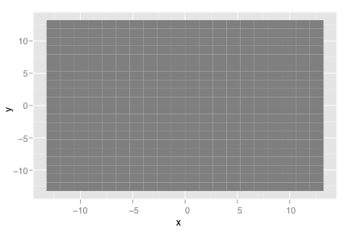 #pretty useless! > > # Add aesthetic mappings > p + geom_tile(aes(fill=z)) 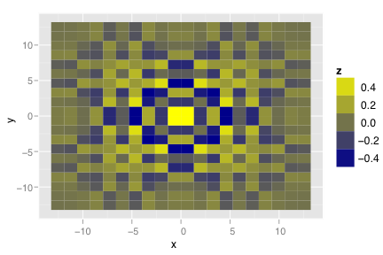 > p + geom_tile(aes(width=z, height=z)) 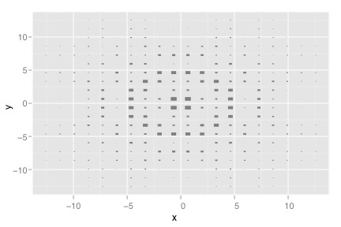 > > # Change scale > p + geom_tile(aes(fill=z)) + scale_fill_gradient(low="green", high="red") 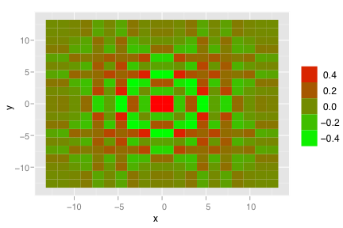 > > # Change coordinate system > p + geom_tile(aes(fill=z)) + coord_polar() 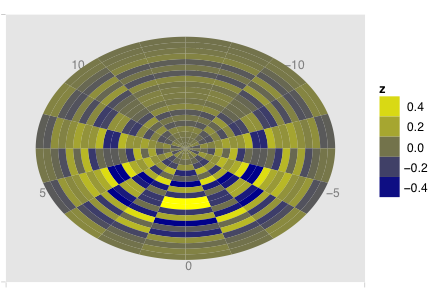 > > # Use qplot instead > qplot(x, y, data=pp(20), geom="tile", fill=z)> qplot(x, y, data=pp(100), geom="tile", fill=z) 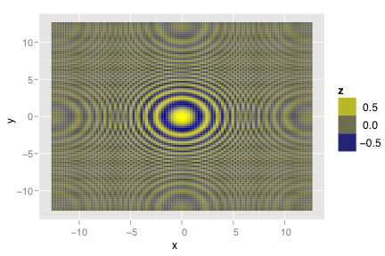 > > # Missing values > p <- ggplot(pp(20)[sample(20*20, size=200),], aes(x=x,y=y,fill=z)) > p + geom_tile() 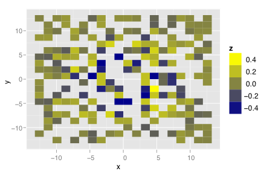 > > # Input that works with image > image(t(volcano)[ncol(volcano):1,]) > ggplot(melt(volcano), aes(x=X1, y=X2, fill=value)) + geom_tile() 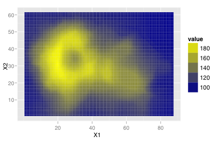 > > # inspired by the image-density plots of Ken Knoblauch > cars <- ggplot(mtcars, aes(y=factor(cyl), x=mpg)) > cars + geom_point() 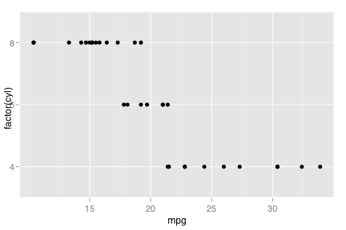 > cars + stat_bin(aes(fill=..count..), geom="tile", binwidth=3)
> cars + stat_bin(aes(fill=..density..), geom="tile", binwidth=3) 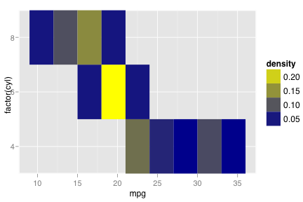 > > # The following is a little bit of a hack, because the density > # function computes the densities separately for each group, and > # doesn't predict on the same grid of x values, which means the > # resolution of the data, is v. small, and we need to manually set > # the width to something reasonable > cars + stat_density(aes(fill=..density..), geom="tile", width=0.1) 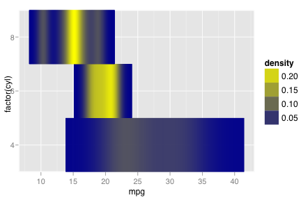 > cars + stat_density(aes(fill=..scaled..), geom="tile", width=0.1) 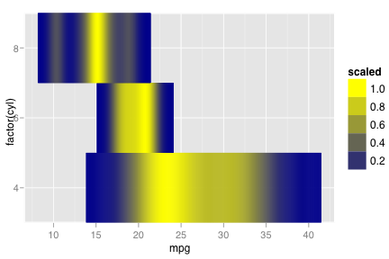 > cars + stat_density(aes(size=..scaled..), geom="point", width=0.1) 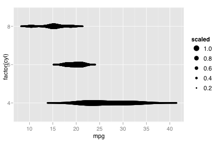 > > # Another example with with unequal tile sizes > x <- rep(c(2, 5, 7, 9, 12), 2) > y <- factor(rep(c(1,2), each=5)) > z <- rep(1:5, each=2) > > x.cell.boundary <- c(0, 4, 6, 8, 10, 14) > w <- rep(diff(x.cell.boundary), 2) > > qplot(x, y, fill=z, geom="tile") 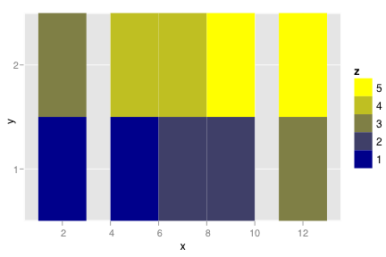 > qplot(x, y, fill=z, geom="tile", width=w) 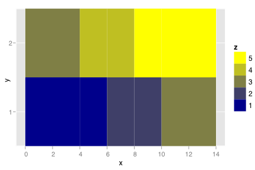 > qplot(x, y, fill=factor(z), geom="tile", width=w) 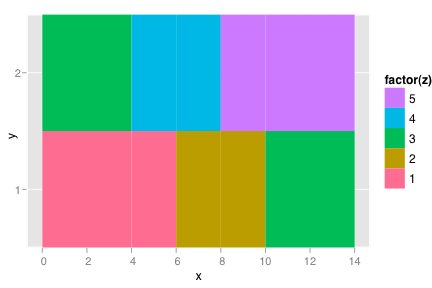 > > # You can manually set the colour of the tiles using > # scale, used when you want a direct mapping'>scale_manual > col <- c("darkblue", "blue", "green", "orange", "red") > qplot(x, y, fill=col[z], geom="tile", width=w, group=1) + scale_fill_manual(labels=letters[1:5], breaks=col, grob="tile") 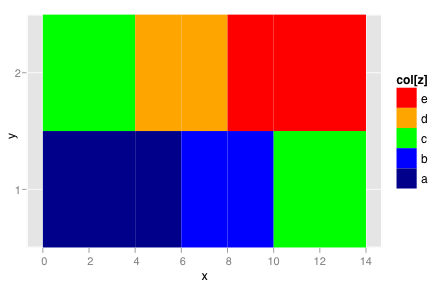